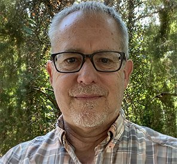

Oregon Health & Science University, Portland, OR, USA

Background: Memory and cognitive impairments remain disabling, with few effective treatments. Low-intensity transcranial ultrasound (TUS) is a non-invasive neuromodulation approach with a favorable safety profile and preliminary evidence of cognitive benefit, with one hypothesized but unproven mechanism involving microtubule resonance and reassembly. Objectives: This open-label pilot study evaluated the safety and preliminary efficacy of the US Pro2000 unfocused ultrasound device in adults with memory or cognitive difficulties, a sample spanning subjective cognitive decline among self-administering participants to diagnosed dementia among caregiver-rated recipients, and described self-reported symptom trajectories. Methods: In a within-participant design, adults with self-reported cognitive impairment, or their caregivers, applied the device at the right temporal window for 5 min three times daily (target 15 min/day), in cycles of 3 weeks on and 1 week off. Outcomes (GAD-7, CESD-5, Inoue battery, and caregiver-rated MDS 3.0) and adverse events were collected online. Mixed-effects models with age and device-use covariates assessed change over time, with False Discovery Rate correction within aim. Results: Twenty-seven participants enrolled and 26 initiated treatment. Across 2,174 daily assessments, no serious or unanticipated adverse events occurred; only headache (15.4%) and transient jaw clenching (3.8%) were possibly related, and none caused discontinuation. Among self-administered participants, depression (CESD-5) declined significantly (p_FDR = 0.016) and five of eight monthly self-report symptoms improved, including memory, word-finding, and problem-solving (all p_FDR 0.040); anxiety trended downward, and the objective cognitive battery, near ceiling at baseline, did not change. Caregiver rated outcomes were stable. Device use showed no dose response, and sensitivity analyses were consistent. Conclusion: Home-based self-administered low-intensity TUS was well tolerated, with only mild transient events, although adverse-event ascertainment relied on unblinded self-report and relatedness judgments were made by unblinded investigators. Efficacy signals were confined to self-report, while objective cognition and caregiver ratings were unchanged. The uncontrolled design, small subgroups, and reliance on self-report preclude causal inference. These findings support the safety and feasibility of TUS and justify an adequately powered, double-blind, sham-controlled trial.
I am a naturopahic physician, acupuncturist and computational biologist. I am an assistant professor at the Oregon Health & Science University in the Department of Neurology. My overall research interest is the study of salutogenesis, or health restoration, from a multisystem multiintervention whole organism perspective. I am currently studying health restoration for both age-related and neurodegenerative cognitive impairment in animals and humans.